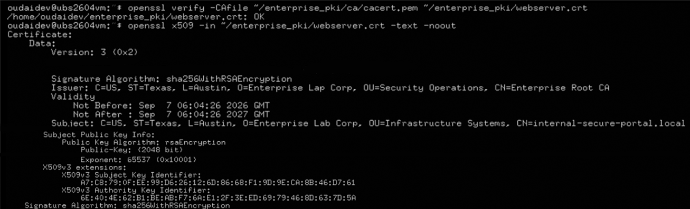

Public certificate authorities exist to solve a specific problem: how do two parties with no prior relationship establish cryptographic trust? Inside a private corporate subnet that problem doesn't exist — everyone answers to the same internal authority. Relying on a public CA for internal services means paying for certificates you can't cryptographically distinguish from an attacker's, on a validation chain you don't control, with an external dependency your own infrastructure team can't audit.
This engagement establishes a self-contained Chain of Trust using OpenSSL — a private Root Certificate Authority that becomes the ultimate cryptographic anchor for every internal endpoint on the network. Asymmetric key generation, certificate lifecycle management, and X.509 structuring are all built by hand so the trust relationships are fully visible rather than hidden behind a vendor's wizard.
All cryptographic material is generated inside an isolated lab VM. The private key parameters and serial sequence integers shown in the raw tool output are redacted from the public telemetry — a private CA whose root key leaks is worse than no CA at all.
Root Certificate Authority Anchoring
The architecture begins with the anchor itself. The Root CA is the cryptographic authority the
entire trust chain will ultimately terminate at — if the private key is compromised, every
certificate ever issued under it becomes instantly forgeable. The workspace is therefore
isolated before a single key is generated, locked to administrative root profiles with a
chmod 700 boundary that prevents adjacent host users from reading the private
key material even if they gain a foothold on the machine:
# Provision the hardened workspace and lock the CA directory
mkdir -p ~/enterprise_pki/{ca,server}
chmod 700 ~/enterprise_pki/ca
# Forge the 4096-bit Root CA private key, armored with AES-256
openssl genrsa -aes256 -out ~/enterprise_pki/ca/cakey.pem 4096
# Generate the self-signed X.509 Root CA certificate (SHA-256, 10-year validity)
openssl req -x509 -new -nodes \
-key ~/enterprise_pki/ca/cakey.pem \
-sha256 -days 3650 \
-out ~/enterprise_pki/ca/cacert.pem \
-subj "/C=JO/ST=Amman/O=Enterprise Root CA/CN=Enterprise Root CA"Three properties of that root key matter. First, 4096-bit RSA rather than 2048 — the root has to outlive every certificate it issues, and key strength at the anchor is not a place to economise. Second, AES-256 encryption on the private key itself — the key file is useless to an attacker without the passphrase, which means a filesystem-level compromise doesn't automatically become a CA compromise. Third, 10-year validity on the root — the anchor must remain valid for the entire lifetime of every leaf certificate it signs, otherwise the chain of trust breaks mid-flight.
The cacert.pem file is now the cryptographic root of the entire enterprise
trust network. Any endpoint that trusts this certificate will automatically trust every
certificate subsequently signed by it — the entire point of a chain of trust.
End-Entity Request & Cryptographic Issuance
With the anchor in place, a scenario was simulated where an internal corporate application
gateway — internal-secure-portal.local — needed strict transport-layer encryption
to handle firewalled corporate network queries. The leaf certificate lifecycle begins with a
private key generated on the endpoint itself, never transmitted, never leaving the
host it belongs to:
# Generate the 2048-bit webserver private key (bound to the endpoint)
openssl genrsa -out ~/enterprise_pki/server/webserver.key 2048
# Build the Certificate Signing Request bound to the internal FQDN
openssl req -new \
-key ~/enterprise_pki/server/webserver.key \
-out ~/enterprise_pki/server/webserver.csr \
-subj "/C=JO/ST=Amman/O=Internal Services/CN=internal-secure-portal.local"
# Sign the CSR with the Root CA (365-day operational certificate)
sudo openssl x509 -req \
-in ~/enterprise_pki/server/webserver.csr \
-CA ~/enterprise_pki/ca/cacert.pem \
-CAkey ~/enterprise_pki/ca/cakey.pem \
-CAcreateserial \
-out ~/enterprise_pki/server/webserver.crt \
-days 365 -sha256The Certificate Signing Request is the pivotal artifact here. It's the structured metadata packet that carries the endpoint's public key and identity claims — subject organisation, common name matching the FQDN — up to the CA for evaluation. Note what crosses the boundary: only the public key, never the private. The endpoint keeps its own secret; the CA merely vouches for it.
The -CAcreateserial flag on the signing step is a small detail with a real
consequence. It generates a monotonic serial-number file
(cacert.srl) that ensures every certificate issued by this CA carries a unique,
traceable identifier. Without it, serial collision becomes possible — and a CA that reuses
serial numbers is a CA that can't reliably be audited or revoked.
Trust Chain Validation
To confirm the mathematical validity and structural pathing of the newly forged trust asset, a cryptographic verification sweep was executed. OpenSSL walked the certificate's signature chain, re-hashed the signed payload against the root's public key, and validated every extension constraint along the way:
openssl verify \
-CAfile ~/enterprise_pki/ca/cacert.pem \
~/enterprise_pki/server/webserver.crtThe engine checked the dynamic signature values against the root's public key, analysed the hash identifiers, and emitted the definitive success log string:
~/enterprise_pki/server/webserver.crt: OK
That one-line OK is not a formality. It means the leaf certificate's signature
was mathematically reconstructed from the root's public key and matched — meaning the root
is genuinely the issuer, the leaf has not been tampered with, and the chain is structurally
intact. Any break anywhere in that sequence produces a distinct error code rather than a
clean pass.
Metadata structural analysis
Subsequent structural metadata dumps confirmed perfect cryptographic alignment between the certificate's two principal identity fields:
-
Subject properties map cleanly to the internal endpoint domain —
CN=internal-secure-portal.local— establishing the certificate's owner identity for TLS hostname verification. -
Issuer identity anchors explicitly to the Enterprise Root CA —
CN=Enterprise Root CA— proving the signing relationship was recorded correctly in the X.509 structure itself, not merely in the file paths on disk.
Any endpoint that trusts the master Root CA will now seamlessly establish encrypted HTTPS channels with the internal web application. The trust relationship propagates automatically down the chain — no per-endpoint configuration, no manual key exchange, no external dependency. The enterprise now owns its own cryptographic identity.

OK
trust chain status verification, followed by the X.509 metadata profile tracking the
internal domain issuer bounds.
Security & Data Privacy Note
Active private key parameters, modular exponents, and raw serial sequence integers visible within the raw OpenSSL text dumps have been clipped or omitted from public logs to preserve infrastructure integrity. The trust architecture is fully documented; the material that would allow it to be forged is not.